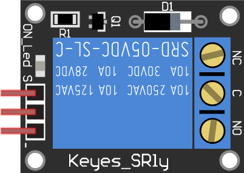

吹直笛打電話？
重現柯南名場景！
Yu-Hsun Lee
@PyConTW 2021

名偵探柯南－戰慄的樂譜 (2008)
數學建模黑客松
直笛?!
| 1209 Hz | 1336 Hz | 1477 Hz | |
|---|---|---|---|
| 697 Hz | 1 | 2 | 3 |
| 770 Hz | 4 | 5 | 6 |
| 852 Hz | 7 | 8 | 9 |
| 941 Hz | * | 0 | # |
雙音多頻訊號
Dual-Tone Multi-Frequency, DTMF
低頻

高頻

傅立葉轉換
Fourier Transform頻譜分析
Example Code - PyAudio
import pyaudio
import numpy as np
pa = pyaudio.PyAudio()
stream = pa.open(format = pyaudio.paInt16,
channels = 1,
rate = 44100,
input_device_index = INPUT_DEVICE_INDEX,
input = True,
output = False,
frames_per_buffer = 8192)
while True:
au_buffer = stream.read(8192, exception_on_overflow = False)
au_array = np.frombuffer(au_buffer, dtype = np.int16)
spec_x = np.fft.fftfreq(8192, d = 1.0 / 44100 )
spec_y = np.abs(np.fft.fft(au_array))
Example Code - Peak Finding
def findfreq(spec_x,spec_y):
kidx = np.abs(spec_x - 1000).argmin()
index1 = np.argmax(spec_y[:kidx])
index2 = np.argmax(spec_y[kidx:4096]) + kidx
return (spec_x[index1], spec_x[index2])
Example Code - DTMF Decode
def dtmf(freq1, freq2):
keypad = [["1", "2", "3", "A"],
["4", "5", "6", "B"],
["7", "8", "9", "C"],
["*", "0", "#", "D"]]
row = np.array([697, 770, 852, 941])
col = np.array([1209, 1336, 1477, 1633])
ridx = np.where(np.abs(row - freq1) < 25)[0]
cidx = np.where(np.abs(col - freq2) < 25)[0]
try:
k = keypad[ridx[0]][cidx[0]]
except:
k = None
return k
頻譜分析（解碼中）
硬體介紹與控制
流程架構
聲音訊號
樹莓派+USB音效卡

繼電器模組
電控鎖
電控鎖
陽極鎖（通電鎖門）
陰極鎖（通電開門）
繼電器模組
繼電器模組
繼電器模組
繼電器模組
組裝電路
Example Code - Relay
import pigpio
relay = 23 # GPIO
pi = pigpio.pi() # Access the local Pi's GPIO
pi.set_mode(relay, pigpio.OUTPUT) # Set GPIO to output mode
pi.write(relay, 0) # LOW, Door Locked
pi.write(relay, 1) # HIGH, Door Unlocked